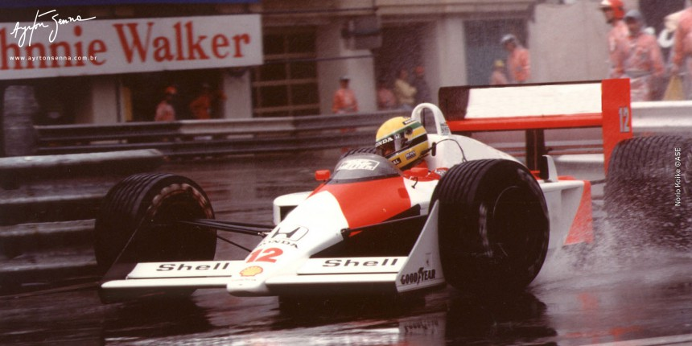

Senna na pista

- Senna tinha um estilo de pilotagem conhecido como "agressivo": Ele freava muito pouco na entrada das curvas; utilizando o freio motor para fazer reduções fortíssimas. Além disso, ele tangenciava mais tarde nas curvas, esterçando bastante o volante, e carregando mais velocidade à curva.
- Ayrton Senna era um excelente acertador de carros. numa época em que a telemetria ou não existia, ou engatinhava, os engenheiros que trabalhava com o Ayrton afirmam que ele passava horas conversando com eles em busca das melhores soluções, que sempre funcionavam e os ganhos eram sentidos na pista. Não por menos, ele foi um dos poucos pilotos - se não o único - a testar pessoalmente o desenvolvimento tecnológico dos sistemas de freios.
- Na época em que Senna conduzia, os carros da F-1 possuíam câmbios manuais e três pedais. Com isso, Senna fazia como ninguém o uso de uma técnica de frenagem conhecida como "punta-taco", cujo objetivo era manter a rotação do motor mais alta nas reduções e evitar os "trancos".
- Além disso, Senna foi um dos primeiros a entender a importância da preparação física para os pilotos. Conforme dito por Gerhard Berger em seu livro, Senna "havia atingido um nível inteiramente novo em preparação física no mundo do automobilismo. Para conseguir fazer o melhor, é necessário treinar tão duro quanto qualquer atleta profissional. E Senna foi o primeiro a fazer isso".
- No início da carreira, Ayrton não era um exímio piloto em condições de chuva. Em uma corrida de kart, ele fez uma péssima prova no molhado. Depois desse dia, Ayrton passou a treinar freneticamente quando chovia em São Paulo. Quando as primeiras gotas de chuva começavam a cair, Ayrton preparava o seu equipamento e partia rumo ao Kartódromo de Interlagos.
- Exemplos de grandes corridas do Ayrton nestas condições são: GP de Mônaco de 1984, GP de Portugal em 1985,[212] GP da Bélgica 1985, GP da Inglaterra 1988, GP da Alemanha 1988, GP da Japão 1988, GP da Bélgica 1989, GP do Canadá 1990, GP do Brasil 1991, GP de San Marino 1991, GP da Austrália 1991, GP do Brasil 1993, GP da Europa 1993 e GP da Japão 1993.